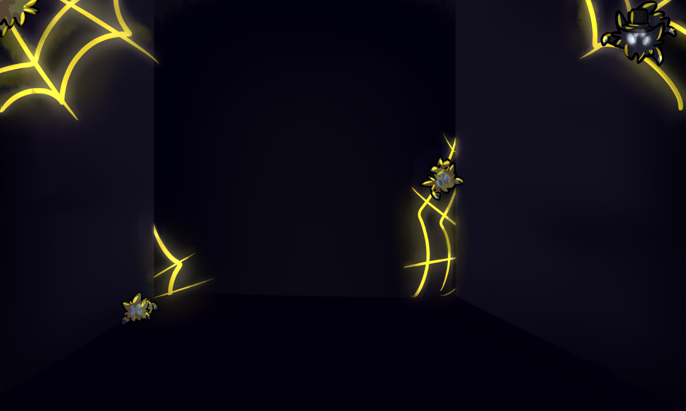
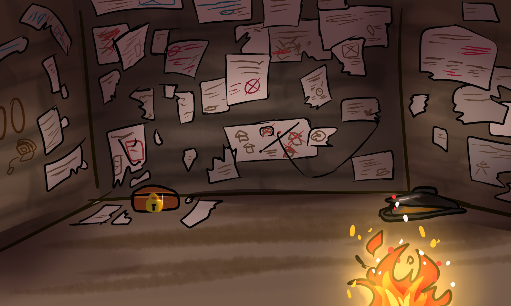
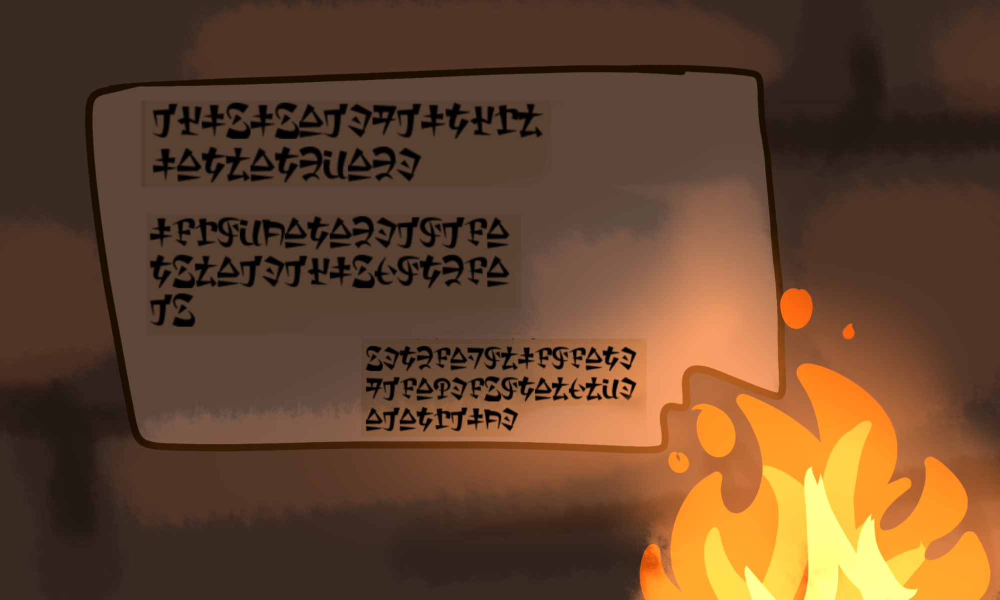
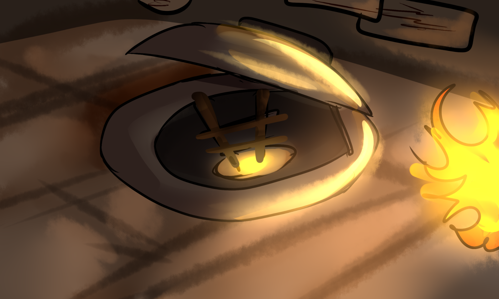

As you fall into the corridor you can hear all kinds of sounds behind: from growls to screams to even water rising. Not wanting to know more, you run blindly into the dark corridor with
nothing but your hand in the stone to guide you.
You bump into loose stones, even squeals of what you think are joltics. You whisper quick ‘sorry’ as you do, hoping they understand you.

As you walk more, you finally see a light around the corner as you run, tripping multiple times but getting up regardless. There’s a single torch just at your reach as you slowly try to get
it. You grasp is easly and immediately move your hand at the end of the stick.
Wow, you really feel like an adventurer now, right?
With now light, you walk with caution to not trip: after all you don’t want to burn yourself or the torch to turn off due the hit. The pressure doesn’t stay too much as you see a round door. You walk towards it with no other place to go as you push it and it makes a beep before it starts to roll and shows an entrance. Surprised you don’t have to do a stupid puzzle, you walk to find a big room, bigger than any you’ve seen before.

The room is a complete ruin with papers all around the walls, most of them rip apart and even on top of each other. Any kind of word you try to read is useless, the letters too fade to be read properly or when it is possible to read, the supposed letters were too weirdly written to be read. Was it another language? That’s the only explanation you could give to yourself without ending up falling into madness.

There’s a hatch at one corner, half open already, as you can see a ladder leading down safely. You can see light at the bottom so you’re sure you can leave the torch in this room as you leave it carefully in the corner near the hatch, giving enough light in the room.

At one of the walls, the smallest one, there’s this written 01010100 and next to it, a drawing of an old-looking computer with a target embedded in the wall. With a small
scratch, you manage to pull it out, a symbol of a question mark on it. At the back, the same code is written but there’s no small computer next to it.
You decide to save the card and
think about the code later.
At the other corner, you can see a small chest with a shiny lock. Adventure fills you as you approach it, thinking in which kind of trick you’ll need to do to open and get all
the probably golden coins inside. You touch the lock, way too new for this old, deserted room. The actual lock is too big for such a small chest; comical in some way, for a
regular sized key. You look around, toss the already broken papers to the ground hoping to find a secret that would give you the key. But after some minutes, no papers were left on the wall
and not a single corner was left without searching. Seems in this room was nothing to the chest.
But you refuse to give up; maybe there’s something to open it later, like the room you went through only a few minutes ago! The chest is small enough to be picked up with a single hand so you
quickly pick it up and go to the hatch.
The torch slowly starts to burn the place down due all the papers you left on the ground and you make sure to close the hatch before the heat reaches you. After a few seconds you touch the hatch only to recoil with a small burn. Seems there’s no way back,let’s hope you got everything from that room.